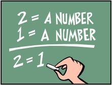

The BCSK Logic

Background
- The fixed point discriminator on set A is
f : A3 ⇒ A;
f(X,Y,Z) = Z if X = Y, 1 otherwise
- The generic fixed point discriminator variety is ...
etc, etc
- BCSK is formulae equivalent to S(F P D1,1)
- It's easy to be a novice!
BCSK Axioms
- i and j are strong and weak implication
- 9 axioms